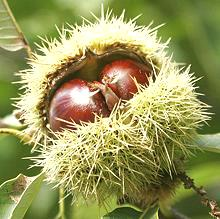

Chestnuts
[genus Castanea, various species]
This common nut is notable for being starchy rather than oily, so
it is used quite differently from other nuts. These nuts were a major food
item in parts of Europe, particularly in Spain, but in the late 1700s
blight wiped out vast chestnut forests resulting in famine. While they
have been largely replaced by potatoes for general sustenance, many
recipes still call for them.
The American Chestnut, which once dominated our deciduous forests, was
almost totally wiped out in the early 1900s by blight from Asia. Nearly
all chestnuts sold in North America are now imported from Europe, China
or Korea. Some American grown nuts are sold here in California, but they
are currently from trees of the Chinese variety.
Efforts to breed an American variety with Asian resistance to the
blight are said near success. When they are available they will be planted
heavily in California, which produces more nuts than practically any other
country - but you knew that.
The photo shows smaller Korean chestnuts on the left and bottom, with
American grown Chinese chestnuts in the upper right. These larger nuts are
also grown in Korea, and range up to 1-7/8 inches across and 7/8 ounce.
The main difference I found is the smaller nuts were fairly
easy to peel, and the larger ones very difficult, but, unfortunately, many
of the smaller nuts were moldy. The nut at the lower right is partially
peeled, showing the endocarp or inner shell, which is the main peeling
problem.
More on Nuts.

Most chestnuts sold in the western U.S. are a Chinese variety that is
much more resistant to chestnut blight than American or European
varieties. These are imported from China, the world's largest chestnut
grower, and Korea. In the Eastern U.S. many of the chestnuts available
are imported from Europe. The Chinese variety is the same size as the
European and a bit bigger than the currently unavailable American
variety, but is not as sweet as the European.
Buying:
Here in California we get bins full of Chinese
and Korean chestnuts starting in October - I presume timing in the East
is similar. Peeled European chestnuts put up in syrup can be found in
some gourmet outlets at unacceptable prices. Peeled Asian chestnuts are
available, both dried and frozen, in markets serving Chinese and Korean
communities.
Peeling:
This is the major problem with chestnuts - they
are difficult, sometimes nearly impossible, to peel. The Internet abounds
with instructions on how to peel them by oven roasting, fire roasting or
boiling. All these methods work equally well on the Chinese chestnuts we
get here - not at all. Perhaps they work on European chestnuts, I don't
know, we don't have those here.
The outer shell (exocarp) is not the problem. It's the endocarp, or
inner shell, which adheres hard to the nut meat that's difficult to
remove. Not only is the endocarp difficult to remove at best, as soon as
the nut cools enough to hold without pain, it starts to stick down again.
Instructions that say the nut meat will "practically fall out" are
laughable.
You have to have the nuts at a high temperature for sufficient time to
loosen the endocarp, and by time it's loosened, the nut meat has become
crumbly. The nut, rather than peeling, falls into fragments - with
endocarp tightly adhering to most of the fragments.
Here is the only way I've found that works well enough to be useful.
The theory of this method is that the outer surface of the nut becomes
hot enough long enough for the endocarp to loosen, but the center was
so cold it isn't yet hot enough to become crumbly. The nut holds together
well enough to peel. The core temperature does have to be high enough so
the nut doesn't cool too fast from the inside out. In other words, timing
is critical.
Warning:
I developed this method in 2010 with some
American grown Chinese chestnuts - even then it worked a lot better with
the smaller Korean chestnuts. In 2014 I tried again with a new batch of
Chinese chestnuts, but apparently they'd been "improved", because they
were impossible to peel with this or any other method - all I got was
sore fingers. I have declared them unpeelable, and just buy pre-peeled
frozen chestnuts at the Asian markets. Commercially they probably use
machines and chemicals, such as lye, to peel chestnuts.
- Score nuts just through the outer shell (as all instructions tell you to
do). My prep knife has an extremely sharp, rigid point, so I hold the nut
to my cutting board, scar side down, with my left hand. With the right I
set the heel of the blade on the cutting board and bring the tip down across
the flat side of the nut. Special chestnut scoring knives are available on
the Internet (they look like tiny linoleum knives).
- Freeze them solid in the freezer compartment, preferably overnight to
be sure.
- Bring a large pot of water to a high boil over your hottest
burner (large so the temperature drop is limited when adding nuts).
- Working with less than 1 pound at a time pour frozen nuts into
the boiling water. Keep over highest flame. For small nuts 8 minutes,
for large nuts maybe 10 minutes. Scoop them out of the water into a
bowl all at once. Keep the water at a boil.
- Start peeling as quickly as you can hold the nuts (this is best done
by someone with hands accustomed to hard work, thus tough skin and
strong fingernails). As soon as they cool enough to be comfortable to
handle, the endocarp will start sticking down and be difficult to peel.
- Toss one nut back in the boiling water and give it a minute to get
hot. Scoop it out and toss in another. Chill the hot nut under cold
running water for 1/2 second, just enough so you can handle it. Peel
as fast as you can. Repeat.
- If you see any sign of mold (blue-green spots) or rot (black spots)
while peeling, discard immediately and go to the next nut. You can
often smell mold before you see it.
- When all are done, it's time to boil up the next batch.
- When all the nuts are peeled, they still will be less than fully
cooked, so give them another 10 minutes in boiling water or cook fully
by some other method.
Yield: 11-1/4 ounces of large Chinese chestnuts, with no
loss from mold, yielded 7-7/8 ounces peeled edible (70%).
ok_chestz 101031 - www.clovegarden.com
©Andrew Grygus - agryg@clovegarden.com - Photos
on this page not otherwise credited © cg1
- Linking to and non-commercial use of this page permitted